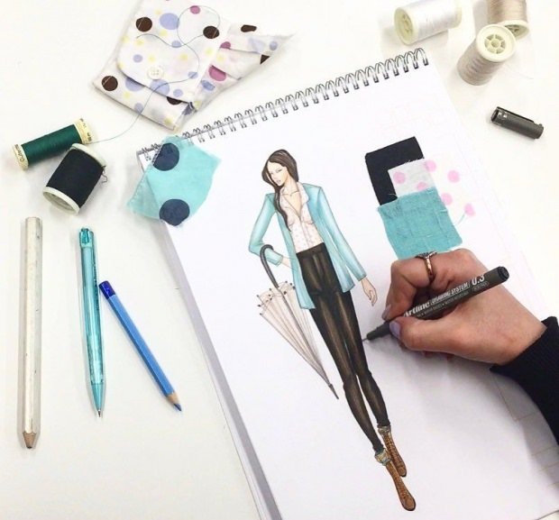

Bilgisayar programının amacı iş hayatının ve toplumsal yaşamın,bilgi toplama ve bu bilgileri işleme ile ilgili konularındaki problemlerinin bilgisayarda çözümlenmesi alanlarında çalışacak ara insan gücünü yetiştirmektir.
Bu alanda öğrenim görmek isteyen lise öğrencileri kendilerini matematik ve mantık konularında iyi yetiştirmelidirler.Kişinin iyi programcı olabilmesi için üzerinde çalışacağı konuyu kavrayabilme ve bunu en ince ayrıntısına kadar bilgisayar diline dökebilme yeteneğine sahip olması gereklidir.
Bilgisayar Programcılığı Programı, lise eğitimden sonra iki yıllık bir eğitim sunmaktadır.Öğrencilerin mezun olabilmek için,2.00 ortalamayı sağlamaları gerektemedir.Bunun yanında öğrencinin mezun olabilmesi için,30 iş günü kapsayan bir Stajı tamamlaması da zorunludur.
Programında diğer bölümlerde de var olan ortak derslerin yanı sıra donanım ve yazılım dersleri yer almaktadır.Çoğunlukla dersler bilgisayar laboratuarlarında yapılmakta ve uygulamalı olarak yürütülmektedir.
Yüksekokulumuzda iki adet bilgisayar laboratuarı bulunmaktadır.Öğrenciler tamamı internet erişimine sahip bilgisayarları uygulama derslerinde kullanabilmektedirler.

Geleneksel El Sanatları
El Sanatları insanoğlu var olduğundan beri tabiat şartlarına bağlı olarak ortaya
çıkmıştır. İnsanların ihtiyaçlarını karşılamak, örtünmek ve korunmak amacı ile ilk
örneklerini vermiştir. Daha sonra gelişerek çevre şartlarına göre değişimler gösteren el
sanatları, ortaya çıktığı toplumun duygularını, sanatsal beğenilerini ve kültürel özelliklerini
yansıtır hale gelerek “geleneksel” vasfı kazanmıştır.
Bölümün faaliyete geçmesi ile birlikte bilim ve teknolojideki hızlı gelişmeler
sonucunda ülkenin ve bölgenin gereksinim duyduğu el sanatları alanında tasarım ilke ve
üretim bilgilerine sahip, iş kalitesi ve hızını yükseltebilecek düzeyde El sanatları
tasarımcısı yetiştirilecektir. Özellikle bulunulan yöreye özgü el sanatlarının tanıtılarak daha
da geliştirilmesi suretiyle bölge ekonomisine ve turizmine katkı sağlamak
hedeflenmektedir. Piyasanın gerektirdiği nitelik ve yeterliliklere sahip farklı uzmanlık
alanlarında yetiştirilecek mezunların sektöre kazandırılması büyük bir avantaj
sağlayacaktır. Bölümün açılması ile birlikte yetiştirilecek El Sanatları tasarımcıları ilgili
sektöre desen tasarımları hazırlayacak ve bu tasarımlar ile geleneksel tarihi dokunun
özelliklerini koruyarak gelişmelere katkıda bulunacaklardır. Böylece planlanan uzmanlık
alanları endüstrileşmenin yanı sıra geleneksel kültürümüzün korunması ve tanıtılıp
yaygınlaşmasında büyük önem taşıyacaktır.
Birçok il ve ilçede orta öğretim seviyesinde öğrenci bu alanla ilgili bölümlerde
okumaktadır. Yükseköğretim seviyesindeki 37 ilimizde Geleneksel El Sanatları mevcut bir
programdır. El sanatları bakımından zengin bir kültüre sahip olan Afyonkarahisar’ da bu
programın üniversitemizde açılması kültürümüz olan sanatlarımızın devamı için önem
kazanmaktadır.
Başlıca iş olanakları şunlardır:
- Milli Saraylar
- Vakıflar Genel Müdürlüğü
- Kültür Bakanlığı
- Yörede ve ülkedeki konuyla ilgili özel atölyeler
- Kendi özel atölyelerini kurarak piyasada çalışabilirler.
- Halk eğitim merkezlerinde usta öğretici olarak çalışabilirler.
- Ortaöğretim kurumlarında geçici olarak ders verebilirler.
- Çıraklık eğitim merkezlerinde öğretici olarak faaliyet gösterebilirler.
- Özel sektörde, tekstil alanında tekniker unvanı ile çalışabilirler.
Programdan mezun olan öğrenciler Dikey Geçiş Sınavı (DGS) ile aşağıdaki lisans programlarına geçiş yapabilmektedirler.
- El Sanatları
- Geleneksel Türk El Sanatları
- Geleneksel Türk Sanatları
- Halı-Kilim Ve Eski Kumaş Desenleri
- Tezhip

Moda Tasarımı
Toplum ile sektörün ihtiyaçları doğrultusunda Moda Tasarımı alanında beceriler kazandırarak; ulusal ve uluslararası düzeyde nitelikli eğitim ve araştırmaya dayalı ürün, sistem ve süreç tasarımları yapabilen, bilimsel ve estetik ölçütlerle düşünceyi modele dönüştürebilen, moda tasarımı konusunda en son bilgi ve teknolojik yenilikleri izleyen, özgün ve yenilikçi tasarımlarla lider olabilen, ekip çalışmasına yatkın, özgüveni yüksek, tarihsel, kültürel ve sanatsal değerleri dikkate alan,vizyon sahibi tasarımcıları yetiştirme amacıyla 2013-2014 eğitim-öğretim yılında öğretime başlamıştır.
BİLGİSAYAR DESTEKLİ KALIP-TASARIM
Gelişen teknoloji her alanda olduğu gibi Tekstil ve Hazır Giyim sektöründe de yapılan uygulamaların kalitesini moda öncülüğü yapabilme açısından da yükseltmekte, zaman kullanımı ve performansta verimliliği artırmaktadır. Bu endüstri için tasarımcı yetiştirecek olan Moda Tasarımı Programının yürütüleceği bölümde bilgisayar destekli moda ve kalıp tasarımı uygulamalarının gerçekleştirilmesine olanak veren 20 öğrencinin aynı anda eğitim alabileceği bilgisayar laboratuvarı bulunmaktadır. Bu laboratuvarlarda bulunan Assyst lisanslı yazılımları ile kalıp hazırlama, model uygulama, serileme, tasarımları 3D modelleme, boyama, desenleme gibi temel giysi ve kalıp tasarımı uygulamaları bilgisayar ortamında yapılabilecektir.Giysi üretimi için gerekli olan üretim ortamı teknolojilerini tanıyarak ve kullanma becerisine sahip olarak yetişebileceklerdir. Ayrıca, Moda Tasarımı Programında yer alan Bilgisayar Destekli Tasarım dersleri ile öğrencilerin bu yazılımları kullanmada gerekli bilgi ve becerileri kazanması sağlanacak, endüstrinin ihtiyaç duyduğu, tasarım ve üretimde teknolojiyi etkin kullanma yeterliliğine sahip nitelikli elemanlar yetiştirilmiş olacaktır.
EĞİTİM İÇERİĞİ
Yüksekokulumuzda verilen eğitim endüstriye yönelik olmaktadır. Özellikle modelistlik ve stilistlik mesleğinin olmazsa olmazı Kalıp ve üretim derslerinde bire-bir çalışılmakta ve uygulama eğitimi tamamen işletmedeki gibi gerçekleşmektedir. Bu nitelikte mezun olan öğrencilerimiz işletmelerdeki çalışma prensiplerine daha kolay uyum sağlayacaklardır.
 İŞ İMKÂNLARI
İŞ İMKÂNLARI
- Moda Tasarımcısı
- Tekstil Tasarımcısı
- Modelist
- Stilist
- İllustratör
- Moda Danışmanı
- Kostüm Tasarımcısı
- Moda Editörü
- Aksesuar Tasarımcısı
- Moda Koordinatörü (televizyon, sinema, sahne performansı, magazinler, vs.)
- Trendsetter
EĞİTİM OLANAKLARI
Yüksekokulumuzda 120 AKTS(ECTS) kredisini tamamlayan öğrenciler mezun olmak hakkı kazanırlar. Mezun olan öğrenciler DGS sınavında başarılı olduğu takdirde aşağıdaki lisans eğitimlerine devam edebilmekte ve lisans eğitimi sonrasında formasyon eğitimi de alarak öğretmen olabilmektedirler.
- Moda Tasarımı
- Giyim Endüstrisi ve Moda Tasarımı
- Giyim endüstrisi
- Görsel sanatlar ve Tasarımı
- Tekstil Tasarımı ve üretimi
Muhasebe ve Vergi Uygulamaları
Muhasebe ve Vergi Uygulamaları programı İşletmelerin muhasebe bölümleri ile kamu kurum ve kuruluşlarının muhasebe servisinde sorumluluk üstlenebilecek ve / veya yasal şartları sağladıktan sonra kendi adına işyeri açıp çalıştırabilecek nitelikli eleman yetiştirmeyi amaçlar.
Yüksekokulumuz Muhasebe ve Vergi Uygulamaları programı 2002-2003 öğretim yılında eğitime başlamıştır.
Muhasebe programı öğrencileri Teorik derslerin yanında ağırlıklı olarak okuldaki bilgisayar laboratuarlarında Muhasebe paket programlarını uygulamalı olarak işlemekte,muhasebe laboratuarında büro araç ve gereçlerinin kullanımını uygulama olarak gerçekleştirmektedir. Ayrıca öğrenciler iş piyasasından alınan gerçek örnekler üzerinde çalışarak uygulamalar gerçekleştirmektedir.
Bu programın hedefi iki yıllık ön lisans dönemi sonunda öğrencilerin muhasebe kaydı, beyannamelerin doldurulması , bordro düzenleme bilanço çıkarma gibi muhasebe ile ilgili bilgileri ve becerileri bilgisayar ortamında uygulayabilir düzeye getirmektir.
MEZUNLARIN İŞ BULMA OLANAKLARI:
Muhasebe Meslek Elemanı Kamu kurumlarında, özel işyerlerinde veya kendi işlerini açıp çalışabilirler.
LİSANS OLANAKLARI
Muhasebe Programı öğrencileri mezun olduktan sonra Dikey Geçiş Sınavına girebilirler. Bu sınavda başarılı olan öğrenciler Lisan eğitimlerine devam ederler.
Elektrik Teknolojisi
Elektronik Teknolojisi Programının amacı, elektroniğin sanayide kullanılmasının sonucu temel elektronik konusunda yeterli bilgiye sahip sanayide kullanılan elektronik sistem ve ekipmanları tanıyan, özelliklerini bilen, bilgisini endüstriyel sistem ve ekipmanlara uygulayabilen aynı zamanda ileri bilgi teknolojilerindeki gelişmelere ise açık kişiler yetiştirmektir.
Program Hakkında
Elektronik ve Otomasyon Bölümü Elektronik Teknolojisi Programı önlisans programı, 2 yıllık bir eğitim içerir. YGS 1 Puanıyla öğrenci Meslek Yüksekokulumuzu tercih etmektedir.
Programda Bulunan Laboratuvarlar
Temel Elektrik-Elektronik Lab.
Mikroişlemci ve Mikrodenetleyiciler Lab.
Programlanabilir Lojik Kontrol (PLC) Lab.
Mesleğin Geleceği
Bu alan yaklaşık 30 yıldır bulunmaktadır ve geleceği şu anda tüm sistemlerin elektronik tabanlı olmasından dolayı çok net bir şekilde açıktır.
Kazanılan Derece
Elektronik Teknolojisi Teknikeri
Kabul ve Kayıt Koşulları
Meslek Lisesi mezunları sınavsız geçiş haklarını kullanarak Elektronik Teknolojisi Programına ÖSYM tarafından belirlenen şekilde kayıt yaptırabilirler.
Program Profili
Geniş iş olanağı olan bu programda öğrenciler; elektroniğin temel prensiplerini, elektronik donanımın montajını, bakım ve onarımını yapmayı, ölçü aletlerini kullanmayı, bilgisayar kullanmayı ve sanayide kullanılan CAD/ CAM ve benzeri programları kullanmayı, bilgisayarla elektronik devre şeması çizme ve okumayı, sanayi makinelerinin bilgisayar ile elektronik olarak nasıl kontrol edildiğini, gereğinde bakım ve onarımını yapabilmeyi, teknik rapor hazırlamayı, proje hazırlamayı, işletim masasında iş yerinin ve personelin iş güvenliğini sağlamayı öğrenmektedirler.
Mezunların İstihdam Profilleri
Elektronik Teknikeri özellikle 2.sınıfta aldıkları her bir meslek dersi için uzmanlaşıp, bu alanlarda çalışabilirler. Gerek kamu gerekse de özel sektörde aşağıdaki alanlarda çalışabilecekleri gibi, kendi işlerini de kurabilirler.
Ses sistemleri, salon, stüdyo ve meydanların seslendirilmesi
Teknik servisler, bakım-onarım birimleri
Elektrik-elektronik montaj ve demontaj işleri
Mikrokontrolör programlama
Güç elektroniği
Elektrik-elektronik cihaz imalat fabrikaları
Elektronik tasarım büroları
Kontrol sistemleri
Güvenlik sistemleri
Tıp elektroniği
Meslek Elemanlarının Yaptığı İşler
Otomasyon sistemleri için kartların baskı devrelerini tasarlar, analizlerini yapar.
Mikrodenetleyicilerin ve Programlanabilir denetleyici Programlarını hazırlar.
Kartlarda hatalı devreleri tespit eder ve onarımlarını yapabilirler.
Eğer bulundukları kurumlarda mühendisler varsa bu elemanlar ile çalışanlar arasında ki bilgi diyaloğunu dengeler.
Kurum içinde teknik kontrolleri sağlar.
Üst Derece Programlarına Geçiş (DGS)
19.02.2002 tarih ve 24676 sayılı Resmi Gazetede yayımlanan “Meslek Yüksekokulları Mezunlarının Lisans Öğrenimine Devamları Hakkında Yönetmelik” ile Yükseköğretim Kurulunun belirlediği uygulama esasları uyarınca, Meslek Yüksekokulları programlarından mezun olan başarılı öğrencilerin örgün öğretim lisans programlarına dikey geçiş yapabilmektedirler. Meslek Yüksekokulumuz Elektronik Teknolojisi Programından mezun olan öğrencilerimizin
yerleşebilecekleri lisans programları;
- Bilgisayar Mühendisliği
- Elektrik Mühendisliği
- Elektrik-Elektronik Mühendisliği
- Elektronik Mühendisliği
- Elektronik Haberleşme
- Teknolojisi Elektronik ve Bilgisayar
- Elektronik ve Haberleşme Mühendisliği
- Enerji Mühendisliği
- Fizik Mühendisliği
- Havacılık Elektrik ve Elektroniği
- Kontrol Mühendisliği
- Meteoroloji Mühendisliği
- Uçak Elektrik-Elektronik Mühendisliği
- Uzay Mühendisliği
Üst Derece Programlarına Geçiş (YGS, AÇIKÖĞRETİM)
- İktisat
- Çalışma Ekonomisi ve Endüstri İlişkileri
- Kamu Yönetimi
- İşletme
- Maliye